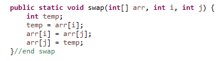
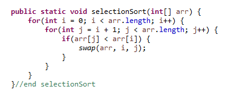
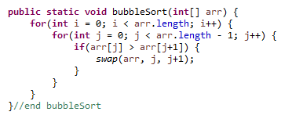
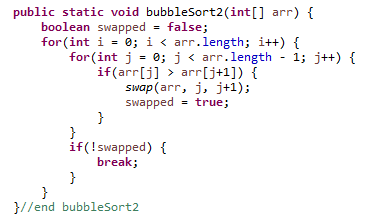
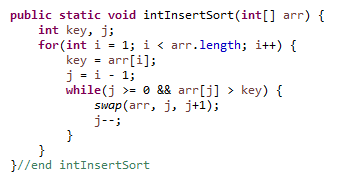
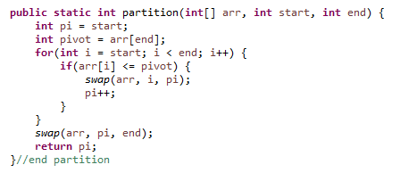
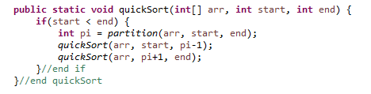
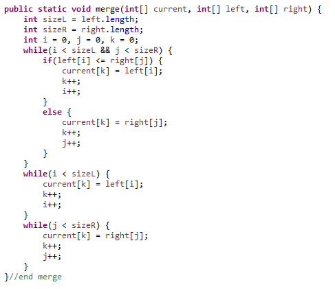
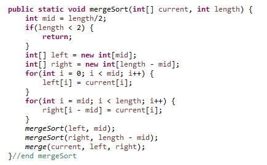

Searching
There are two searching algorithms we learned in class.
Linear Search and Binary Search
Linear Search:
Linear search is an algorithm that sequentially checks each element in the list until the correct element has been found.The linear search algorithm takes in an array of size n, and a key. A for loop will loop through each element in the array
until the key has been found, or until its get to the end. If it does not find the key, -1 will be returned. If it does,
the index of the key will be returned.
Implemetation of Linear Search

Just like the name suggests, the worst case time complexity for linear search is O(n), because for an input size of n, the for loop will iterate n times.
The best case time complexity is O(1), if the key is in the beginning of the array.
Binary Search:
Binary search is an algorithm that is used to search for an element in a sorted array by continually dividing the array into halfs.Since the array is sorted, we can compare the key to the middle element which will tell us which half the key is in. This checks is repeatedly
done until the index of the key is found, or if the key does not exist in the array.
Implemetation of Binary Search
There are two ways of implementing binary search. It can be done iteratively, or recursively.The key is compared with the middle element, and if they are equal, the index of the middle element is returned.
If the key is less than the middle, the end of the array becomes the middle - 1. If the key is greater than the middle,
the start of the array becomes the middle + 1. Then, this is repeated until the key is found using a loop, or using recursion.
Iterative Binary Search:

Recursive Binary Search:

The worst case time complexity is O(logn).
After some number (x) of iterations, the length of the array is 1.
After each iteration, the array is divided in half. Thus, the length of the array after x iterations is
n / 2x, where n is the length of the array. But, after x iterations, the length is 1. Therefore,
n / 2x = 1
n = 2x
x = log2n
The best case time complexity is O(1), where the middle element is the key.
Binary search is much faster than linear search, because as the input size grows, linear growth is much
faster than logarithmic growth, meaning the run time of linear search is much larger as well.
The caveat is that the array must be sorted before hand. Sorting an array also has a computational complexity.
Sorting
There are five sorting algorithms we learned in class.
Selection Sort, Insertion Sort, Bubble Sort, Quick Sort, and Merge Sort.
In several of these sorting routines, an element at one index must be swapped another index. This is done by creating an temporary
variable in order to store the value of one element, setting the value of that element to another, and setting the other element
to the temporary variable. This effectively swaps the values between the two elements.
Swap Method Implemetation
This method will be used in several sorting algorithms.
Selection Sort
Selection sort works by iterating through the array to find the smallest element and moving it the front. The array is separatedinto a sorted and an unsorted part. In each iteration, the minimum element from the unsorted array moves to the sorted array.
Implemetation
The first for loop keeps track of the subarray of sorted elements, while the nested array iterates through the unsorted part of the array.
In each iteration of the nested for loop, a comparison is made between the current index every other index until its finds something
that is less than the value at the current index. If this is the case, the two elements swap places. The i index increments, and the
process is repeated until the array is sorted.
The worst case time complexity is O(n2).
Actually, the time complexity of selection sort is always O(n2).
Selection sort is a sort-in-place algorithm, meaning the algorithm does not require any auxiliary arrays.
Bubble Sort
Bubble sort works by comparing adjacent elements and swapping them if the current element is greater than the adjacent one.Implemetation
This algorithm can be made more efficient by breaking the loop when elements are no longer being swapped, meaning the array is sorted.
Optimized Bubble Sort
The time complexity of bubble sort is O(n2). Even with the optimization, it still has quadratic time complexity.
Bubble sort is a sort-in-place algorithm.
Insertion Sort
Insertion sort works by comparing each element to the elements on its left. The current element is inserted into its correct positionin the array. During the algorithm, the array will form sorted and unsorted sections.
Implemetation
Starting at the beginning of the array, the first element is on its own, so its sorted. The next element is compared with the element in the
sorted array, at inserted at its correct position. Each subsequent element is compared with each element in the sorted array, and placed
where it should belong, until entire array is sorted.
The worst case time complexity of insertion sort is O(n2).
The best case time complexity of insertion sort is O(n), which is when the array is already sorted.
Insertion sort is a sort-in-place algorithm.
Quick Sort
Quick Sort is a recursive, divide and conquer algorithm, in which the sorting problem is broken down into sub problems which have simple solutions.An element in the array is picked as the pivot, and partitions of the array are created around the pivot. Any element can be picked as the pivot, but
in this case we're going to use the last element. This algorithm requires two methods, a partition method, and a recursive method.
Partition Implemetation
Once this method runs completely, we are 100% certain that the pivot was moved to its correct spot. Now, we recursively call the partition function on the subarrays
left and right of the pivot. After this, the array will be completely sorted.
Quick Sort Implemetation
The worst case time complexity of this algorithm is O(n2).
The best case time complexity is O(nlogn), when the pivot is always the middle element.
Quick Sort is also a sort-in-place algorithm.
Merge Sort
Merge sort another divide and conquer algorithm like quick sort. The array is divided into many halfs until each element has its own array. The halfs are sortedand merged into one array using another method called merge(). Like quick sort, merge sort is a recursive algorithm.
merge() Implemetation
The merge() method compares two different elements in two different arrays at the same index and inserts them in their correct order. This comparison is done
using inside of a while loop, and if there are any left over elements, two separate while loops add them to the array in their proper order.
Merge Sort Implementation
The mergeSort() method recusively breaks up the given array into various single sized arrays.
The time complexity of merge sort is always O(nlogn).
The space complexity of merge sort is O(n), meaning the memory use increases linearly as the input size increases.
Merge sort is not a sort-in-place algorithm.